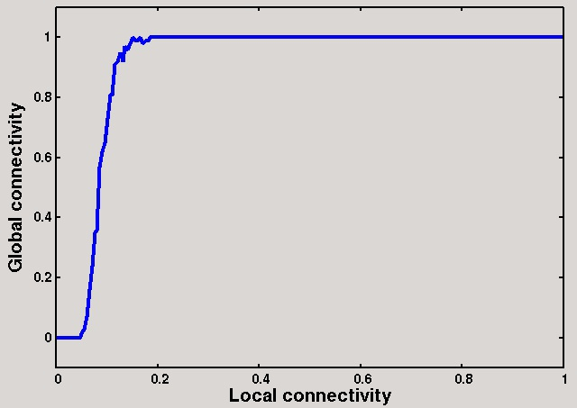
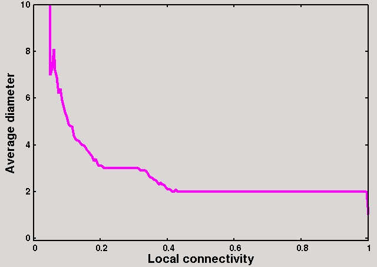

<html><head>
<meta http-equiv="content-type" content="text/html; charset=ISO-8859-1">
   <title>CS21003/CS29003</title>
   <style type="text/css">
      body {margin:0px}
      p {text-align:justify}
      li {text-align:justify}
      dd {text-align:justify}
      a {text-decoration:none}
      a:hover {text-decoration:none; background:#bb2266; color:#ffffdd}
      table {border:solid thin}
      td {border:solid thin}
      th {border:solid thin; background:#552200; color:#ffffff}
      #nobd {border:none}
   </style>
</head>
<body alink="#000000" link="#bb2266" text="#552200" vlink="#bb2266" bgcolor="#ffffff">
<blockquote>
<h2 align="center">Programming Assignment 4</h2>
<p>

</p><h3 align="center">Study of Connectivities and Diameters of Random Graphs</h3>
<p>Gilbert (1959) and Erdös and Rényi (1959,1960) propose several
models of random graphs. In this assignment, we study the <i>G</i>(<i>n</i>,<i>p</i>)
model of random graphs specified by two parameters -- the number of nodes
<i>n</i>, and a probability <i>p</i> in the range [0,1]. A graph (undirected)
<i>G</i>&nbsp;=&nbsp;(<i>V</i>,<i>E</i>) of this family has exactly <i>n</i> nodes
(vertices), and for each pair of disinct vertices <i>u</i> and <i>v</i>,
the (undirected) edge (<i>u</i>,<i>v</i>) is present in the graph with
probability <i>p</i>.

</p><h3 align="left">Part 1: Generate random graphs</h3>
<p>Write a function that, given the parameters <i>n</i> and <i>p</i>,
returns a random undirected graph of the family <i>G</i>(<i>n</i>,<i>p</i>).
Use an adjacency-list representation of an undirected graph. The following
could be a possible representation of such a graph.
</p><pre>   typedef int **graph;
</pre>
<p>A graph data <tt>G</tt> is allocated memory to point to an array of <i>n</i>
<tt>int</tt> pointers. The array <tt>G[u]</tt>, after proper allocation of
memory, is intended to store the count of neighbors of <i>u</i> at the zeroth
index, and the neighbor IDs at the indices 1,2,<tt>...</tt>,<tt>G[u][0]</tt>.
The vertices are numbered 0,&nbsp;1,&nbsp;<tt>...</tt>,&nbsp;<i>n</i>&nbsp;-&nbsp;1.
You may reallocate memory to each <tt>G[u]</tt> so that the dynamic array
pointed to by it contains exactly deg(<i>u</i>)&nbsp;+&nbsp;1 <tt>int</tt>
cells.

</p><h3 align="left">Part 2: Measure connectivity against <i>p</i></h3>
<p>Vary <i>p</i> from 0 to 1 in suitable steps. For each <i>p</i>, do the
following. Generate many (say, one hundred) random graphs of the family
<i>G</i>(<i>n</i>,<i>p</i>). Using DFS/BFS, check how many of these
randomly generated graphs are connected. Report the fractional occurrence
of connected graphs in the generated sample.

</p><h3 align="left">Part 3: Measure diameter against <i>p</i></h3>
<p>Vary <i>p</i> from 0 to 1 in suitable steps. For each <i>p</i>, do the
following. Generate many (say, one hundred) random graphs of the family
<i>G</i>(<i>n</i>,<i>p</i>). In fact, you can use the same sample used
in Part&nbsp;2. Using a shortest-path algorithm, compute the diameters of
the <b>connected</b> graphs in the sample. Compute and report the average
of these diameters against the current value of <i>p</i>.

</p><p><b>Note:</b> The <i>distance</i> <i>d</i>(<i>u</i>,<i>v</i>) between
two vertices <i>u</i> and <i>v</i> is defined to be the length of a
shortest <i>u</i>,<i>v</i> path. The <i>diameter</i> of <i>G</i> (assumed
connected) is the maximum of the distances <i>d</i>(<i>u</i>,<i>v</i>)
taken over all possible pairs of vertices <i>u</i> and <i>v</i> of <i>G</i>.
The diameter of a disconnected graph is taken to be infinity.

</p><h3 align="left">Sample output</h3>
<p>Each line in the following output stores three floating-point values.
The first column represents the local connectivity <i>p</i>,
the second column represents the global connectivity computed in Part&nbsp;2, and
the third column represents the average diameters of the connected samples
as computed in Part&nbsp;3 (if all the samples are disconnected, a large
diameter (infinity) is shown). These results correspond to <i>n</i>&nbsp;=&nbsp;50.
</p><p>
<table id="nobd" cellpadding="10" cellspacing="5" align="center" border="0">
<tbody><tr><th><big>Raw output</big></th><th><big>Plots</big></th><th><big>Plotting commands (gnuplot)</big></th></tr>
<tr>
<td valign="middle"><pre>0.0000 0.00 1000000.0
0.0050 0.00 1000000.0
0.0100 0.00 1000000.0
0.0150 0.00 1000000.0
0.0200 0.00 1000000.0
0.0250 0.00 1000000.0
0.0300 0.00 1000000.0
0.0350 0.00 1000000.0
0.0400 0.00 1000000.0
0.0450 0.00 1000000.0
0.0500 0.02   7.0
0.0550 0.03   7.3
0.0600 0.07   8.1
0.0650 0.16   7.2
0.0700 0.24   6.9
0.0750 0.35   6.2
0.0800 0.36   6.4
0.0850 0.57   5.9
0.0900 0.62   5.6
0.0950 0.65   5.4
0.1000 0.73   5.2
0.1050 0.81   4.9
0.1100 0.81   4.8
0.1150 0.91   4.8
0.1200 0.92   4.4
0.1250 0.95   4.3
0.1300 0.92   4.2
0.1350 0.97   4.2
0.1400 0.96   4.1
0.1450 0.98   4.0
0.1500 1.00   4.0
0.1550 0.99   3.9
0.1600 0.99   3.8
0.1650 1.00   3.7
0.1700 0.98   3.6
0.1750 0.99   3.5
0.1800 0.99   3.3
0.1850 1.00   3.4
0.1900 1.00   3.2
0.1950 1.00   3.1
0.2000 1.00   3.1
0.2050 1.00   3.1
0.2100 1.00   3.0
0.2150 1.00   3.0
0.2200 1.00   3.0
0.2250 1.00   3.0
0.2300 1.00   3.0
0.2350 1.00   3.0
0.2400 1.00   3.0
0.2450 1.00   3.0
0.2500 1.00   3.0
...
0.9000 1.00   2.0
0.9050 1.00   2.0
0.9100 1.00   2.0
0.9150 1.00   2.0
0.9200 1.00   2.0
0.9250 1.00   2.0
0.9300 1.00   2.0
0.9350 1.00   2.0
0.9400 1.00   2.0
0.9450 1.00   2.0
0.9500 1.00   2.0
0.9550 1.00   2.0
0.9600 1.00   2.0
0.9650 1.00   2.0
0.9700 1.00   2.0
0.9750 1.00   2.0
0.9800 1.00   2.0
0.9850 1.00   2.0
0.9900 1.00   2.0
0.9950 1.00   2.0
1.0000 1.00   1.0</pre></td>
<td><valign="middle" align="center">
<p><br><br><br><br>
</p><p>
</p></valign="middle"></td>
<td><pre>unset key
set xtics font "Freesans,14"
set ytics font "Freesans,14"

set xlabel "Local connectivity" font "Freesans,20"
set ylabel "Global connectivity" font "Freesans,20"
set yrange [-0.1:1.1]
plot "randgraph.dat" using 1:2 with lines ls 3 lw 4

set xlabel "Local connectivity" font "Freesans,20"
set ylabel "Average diameter" font "Freesans,20"
set yrange [-0.1:10]
plot "randgraph.dat" using 1:3 with lines ls 4 lw 4
</pre></td>
</tr>
</tbody></table>
</p><p>Your program should work for <i>n</i>&nbsp;=&nbsp;100.

</p><p></p><h3 align="left"><a href="http://cse.iitkgp.ac.in/%7Ewbcm/">Submission site</a></h3>
<hr noshade="noshade" size="2">
<div align="right"><a href="http://cse.iitkgp.ac.in/%7Eabhij/course/lab/Algo1/Autumn11/">Back</a>&nbsp;|&nbsp;<a href="http://cse.iitkgp.ac.in/%7Eabhij/">Home</a></div>
</blockquote>


</body></html>